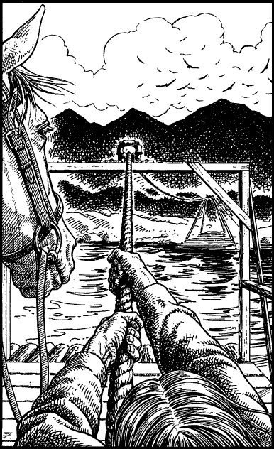

285
In the cold light of dawn you see that the River Storn is too deep and fast-flowing to be fordable at this point. The trail follows the river downstream so you decide to follow it in the hope of finding somewhere to cross. Two miles later, you happen upon such a place.
At a point where the river slows and widens, you find a crude rope ferry has been erected. It comprises two rafts attached to two long lengths of rope which are suspended above the river. A crossing can be achieved by boarding a raft and pulling on its guide rope to haul it across to the opposite bank.

You wait and observe that area for a few minutes. When you feel sure that it is safe to proceed, you place your horse aboard a raft and begin the laborious task of pulling yourself across to the distant shore.
Pick a number from the Random Number Table.
If the number you have picked is even (0, 2, 4, 6, 8), turn to 87.
If it is odd (1, 3, 5, 7, 9), turn to 172.